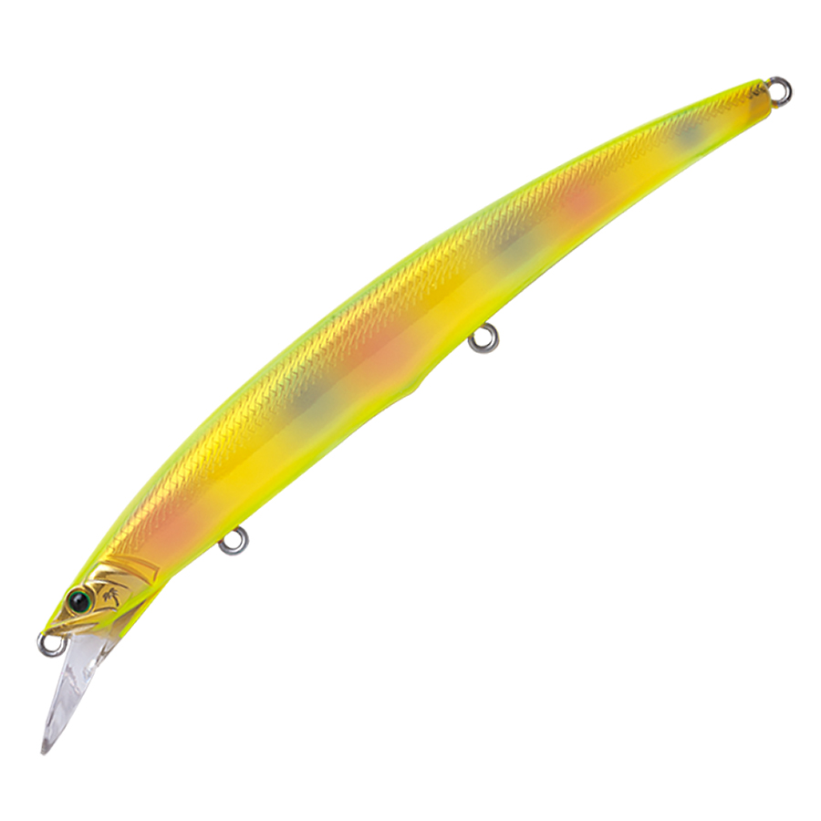
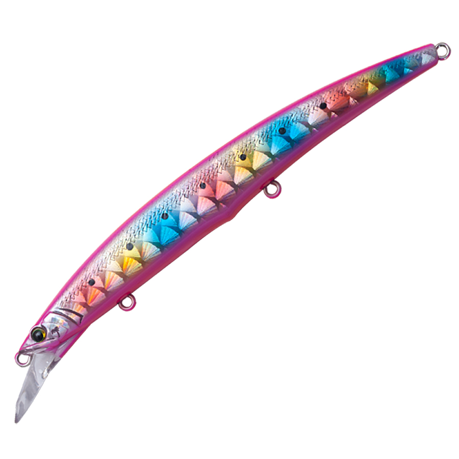
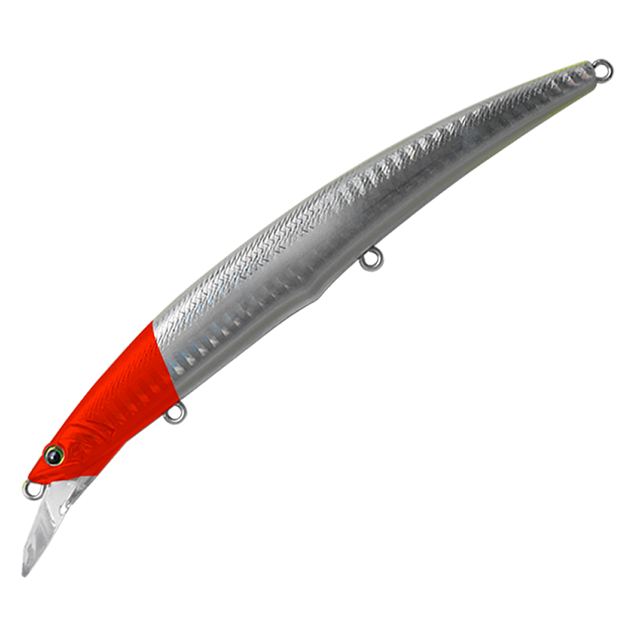

アークローバー125S
（Ark Rover AR-125S）
アークローバー125SはPALMS（パームス）のジャーキングミノーです。
ジャーキングを極めるために生まれたミノーで、ジャークでは三次元に弧を描く幅広のダートと絶妙なヒラウチのハイブリッドアクション、ただ巻きではダイヤモンド型リップが生む飽きさせないウォブンロールで誘います。見切られにくく、足元まで長い距離を追わせられるのが特徴です。

画像出典:PALMS公式HP
スペック
- メーカー
- PALMS（パームス）
- 品番
- AR-125S
- タイプ
- ジャーキングミノー（シンキング）
- 全長
- 125mm
- 自重
- 17g
- フック
- #6（#6〜#5対応）
- 重心
- 3ボールコンビネーション重心移動
- ターゲット
- サワラ・青物・シーバス
- 価格
- 2,200円（税抜）
▼今すぐチェック
アークローバー125Sの特徴
ジャーキングを極めるために生まれた、サワラ向けのジャーキングミノー
-
幅広ダート×ヒラウチのハイブリッド
ジャークでは三次元に弧を描く幅広のダートと絶妙なヒラウチを組み合わせたアクション。サワラの捕食スイッチを入れ、足元まで長い距離を追わせられます。
-
ダイヤモンド型リップ
シャープなヘッドと一体になったリップが鋭く水を切り、ジャーキングでキレのあるダートを生みます。ただ巻きでは飽きさせないウォブンロールに。
-
3ボールコンビネーション重心移動
前2つにステンレス、最後方に比重の大きいタングステンのボールを配置。キャスト時は後方に移動して飛距離を出し、巻き始めはすぐ定位置に戻って立ち上がりよく泳ぎます。
-
不意の青物にも対応する高強度ボディ
低空気抵抗のボディで逆風でも遠投しやすく、不意の青物にも対応できる強度を持たせています。
アークローバー125Sの使い方
基本はジャーキング。ロッドを小刻みにあおって、幅広のダートとヒラウチでサワラを誘い出します。
反応がないときや、追ってきても食わないときは、ただ巻きのウォブンロールに切り替えて、足元まで追わせてから食わせるイメージで使いましょう。
アークローバー125Sの得意な状況
サワラ・サゴシのキャスティングゲーム。ボートでもショアでも、中層で反応するサワラをジャーキングで誘い出したい場面に向いています。
ワンポイント
同じアークローバーの140S（23g）はシルエットと飛距離が一回り上。ベイトが大きいときや遠くのナブラを狙うときは140S、ベイトが小さいときやサゴシサイズには125Sと使い分けましょう。
アークローバーシリーズの使い分け
| モデル | 全長／自重 | 得意な場面 |
|---|---|---|
| アークローバー125S | 125mm／17g | ジャーキングミノー。サワラのジャーキングに（本記事のモデル） |
| アークローバー140S | 140mm／23g | ジャーキングミノー。シルエットと飛距離が欲しいときに |
| アークローバー ショートリップ125L | 125mm／20g | ワンランク浅いレンジ。サーフのシャローに |
| アークローバー ショートリップ140L | 140mm／27g | ワンランク浅いレンジを遠投で |
サワラを中層でジャーキングするならアークローバー（S）、ボトムを小突かずにシャローを攻めたいサーフではショートリップと、レンジで使い分けましょう。サイズはベイトの大きさと飛距離で選びます。
人気カラー
公式ラインナップから4色を紹介します（画像はシリーズ共通のカラー画像です）。
 AL-10 イワシ
AL-10 イワシ
イワシを意識したナチュラルカラー。イワシを追うサワラに。

AL-429 サワラゴールド名前のとおりサワラを意識したゴールド系。濁りや朝マズメに。

KM-432 サワラキャンディピンクピンク系のアピールカラー。光量の少ない時間帯に目立たせたいときに。

H-01 ホロレッドヘッドホロのフラッシングとレッドヘッドの定番系。
画像出典:PALMS公式HP
アークローバー125Sに似ているルアー
-
 MDラウドジャーク120S
SHIMANO
詳細はこちら＞
MDラウドジャーク120S
SHIMANO
詳細はこちら＞
全長120mm・自重19gのSW専用ジャークベイト。約3mの一段深いレンジをジャーキングで攻めたいときに。
-
 ブローウィン140J
ブルーブルー
詳細はこちら＞
ブローウィン140J
ブルーブルー
詳細はこちら＞
全長140mm・自重26gのジャーキングミノー。サワラキャスティングで支持されている1本。
-
 ブラインドボルト140
DAIWA
詳細はこちら＞
ブラインドボルト140
DAIWA
詳細はこちら＞
全長140mm・27〜32gのミノー。レーザーインパクトのフラッシングと飛距離で、広範囲のサワラを探したいときに。